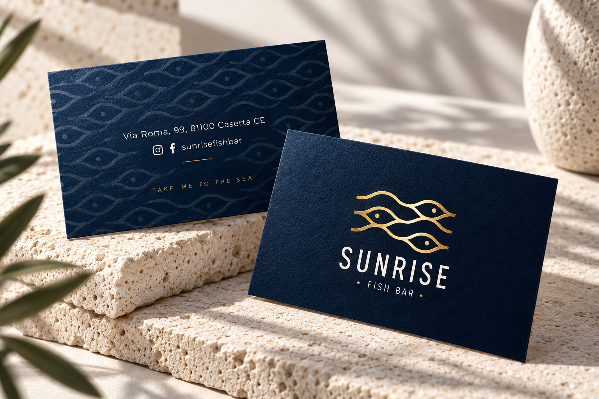
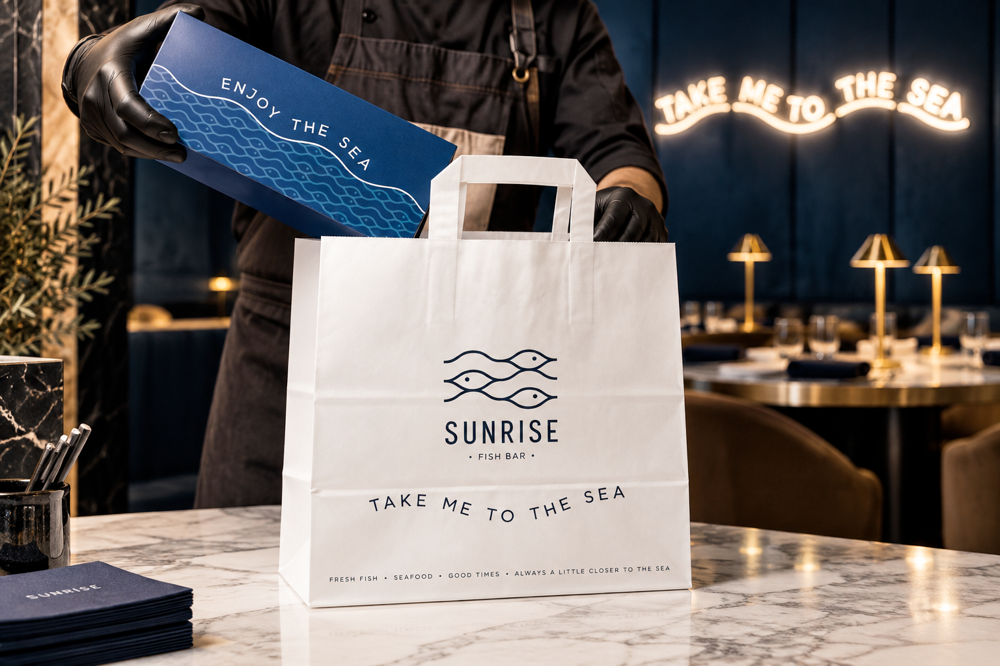
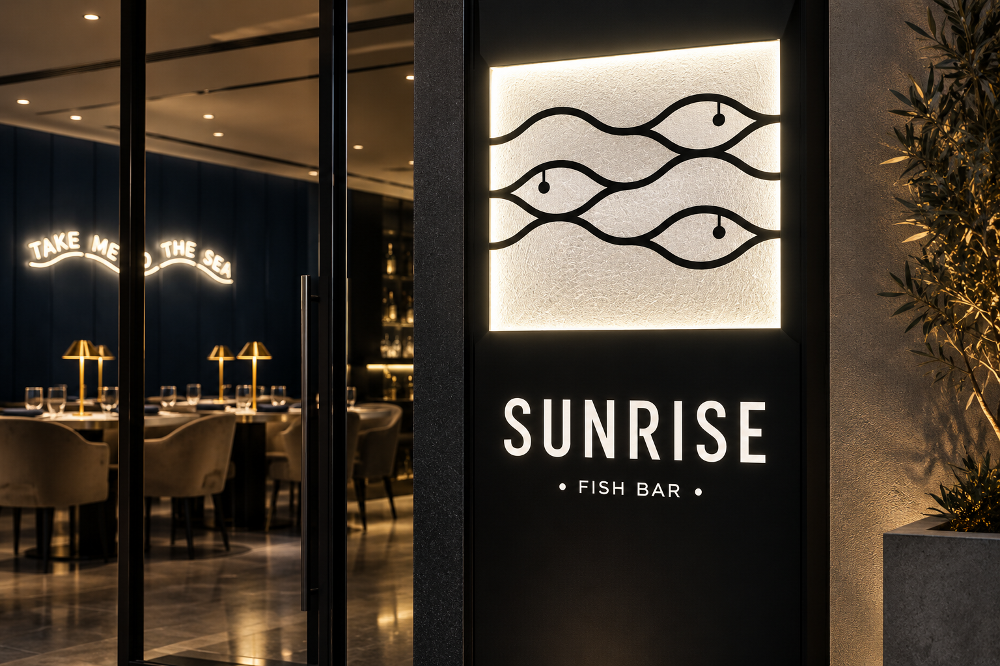
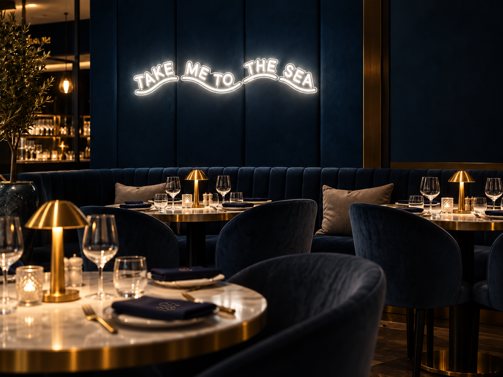

Branding / 02
Sunrise – Fish Bar
A refined maritime identity, bringing the rhythm of the sea to a contemporary fish bar.

Brief
The aim was to give Sunrise a recognisable identity that expresses its seafood offering with warmth and sophistication, across printed materials, takeaway packaging and the dining environment.
Brand concept
I built the identity around three stylised fish whose flowing outlines evoke waves. The symbol connects the food to the sea, while “Take me to the sea” turns that connection into an invitation.
Creative direction
I paired deep navy with warm gold and light neutral tones. Clean, widely spaced lettering balances the fluid symbol, creating a visual language that feels elegant without losing its welcoming character.
- Year
- 2023
- My role
- Brand design
- Tools
- Adobe Creative Cloud · Blender · Figma
- Deliverables
- Visual identity, packaging, promotional materials
Visual identity
The fish symbol works both alongside the wordmark and on its own. Repeated as a pattern, its lines become a flexible graphic element, connecting small printed details with larger brand applications.

Packaging & brand experience
I extended the identity across takeaway packaging, signage and environmental graphics. Messages such as “Take me to the sea” and “Enjoy the sea” give the brand a consistent voice, from the table to the takeaway bag.



Outcome
The identity brings symbol, pattern, colour and language together in one coherent system. Through the mockups, I explored how the same maritime character could remain recognisable across print, packaging and the restaurant setting.
See also

SanTarallo